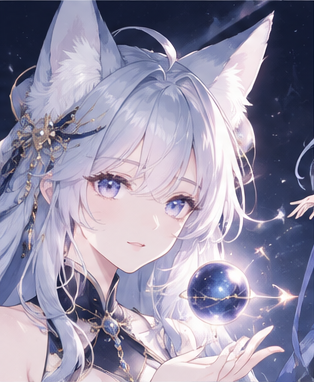
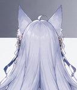

银蓝星灵 · G1.5 视觉核对
唯一当前基准：用户提供的完整效果图与第一版三视图。已确认主要美术方向，正在规范化建模依据。
这是二维参考核对页，不是模型或转台。 G2.1 尚无基础人物模型，未通过视觉验收。下列图像均来自两张原图的裁切或等比对齐，没有生成新人物、补画背面或模拟 3D 旋转。
当前两张基准图
头部与脸部对照
效果图脸部：眼形、鼻唇、下颌、刘海与侧发；保留原像素，放大不增加细节。

设定板头像：与效果图对照，不能把更圆的表现自动套到模型。
正面：头部像素不足以确定精确眼睑拓扑，需同脸正交近景。
侧面：先确认严格 90° 轮廓，耳根和后脑被发束遮挡。

背面：耳间距、冠顶和发束接续需与正面一致。
三视图比例对齐检查
只用冠顶与鞋底做等比缩放、平移，没有把侧面压扁或拉长来强行匹配。髋与膝的橙虚线是待确认的结构位置。耳尖、衣摆拖尾与狐尾不计入身体高度。裁切保留了原图相邻衣发的重叠，不能将其误当成当前视角新增的结构。
先解决的五项差异
- 脸：效果图是倾斜的 3/4 视角，设定板大头像和全身头像的脸宽、眼距观感不同；先补同一脸型的正面/侧面近景，不能用宽高拉伸“修脸”。
- 头身：三个人物的冠顶、耳尖和鞋底高度不同。已统一整体比例用于检查，眼线/下巴/腰等还需要在重绘结构稿中对齐。
- 头发与耳：长发散开程度、耳朵透视和发饰遮挡不同。确定发束分区和耳根，建立相同发量的无风中性发型。
- 狐尾：当前保留一条大型蓬松狐尾；图中尾根被遮挡。必须补尾根出口与后裙关系，不能从头发或裙摆上接出尾巴。
- 礼服：效果图与设定板的胸前、开衩、袖片和垂链有变化。G2.1 只做同版基础礼服轮廓，复杂饰品后置；不改回旧交领服装。